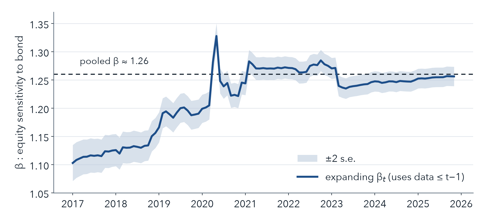
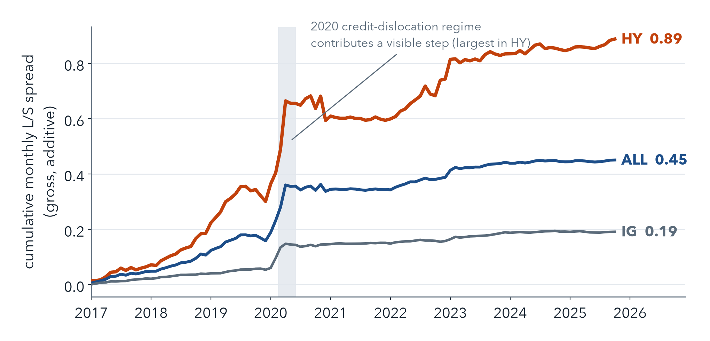
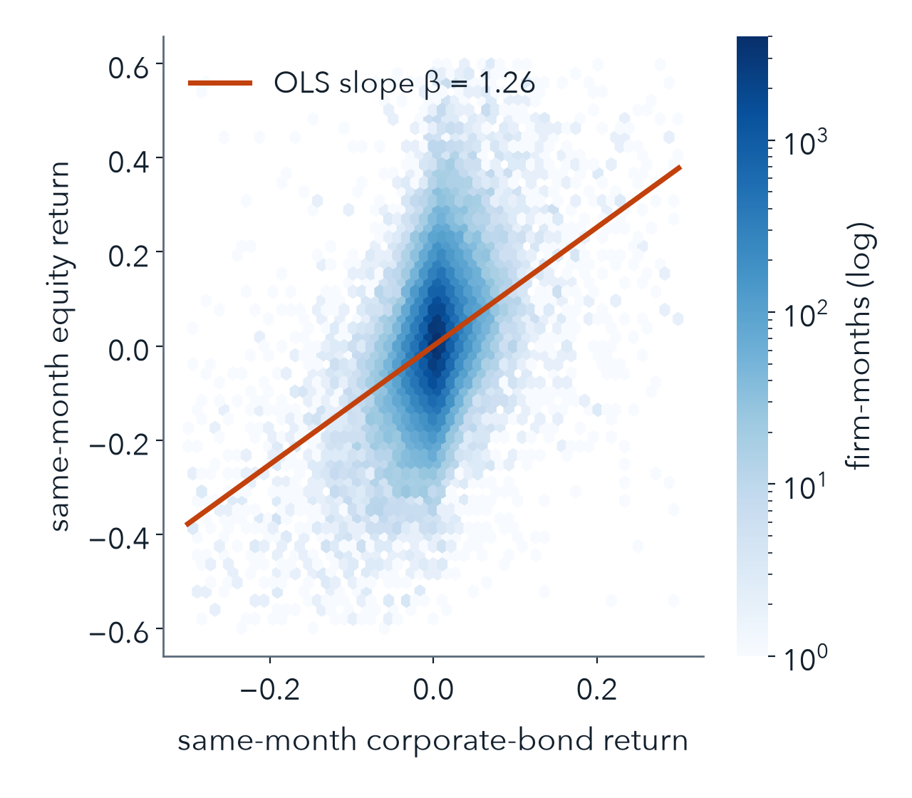
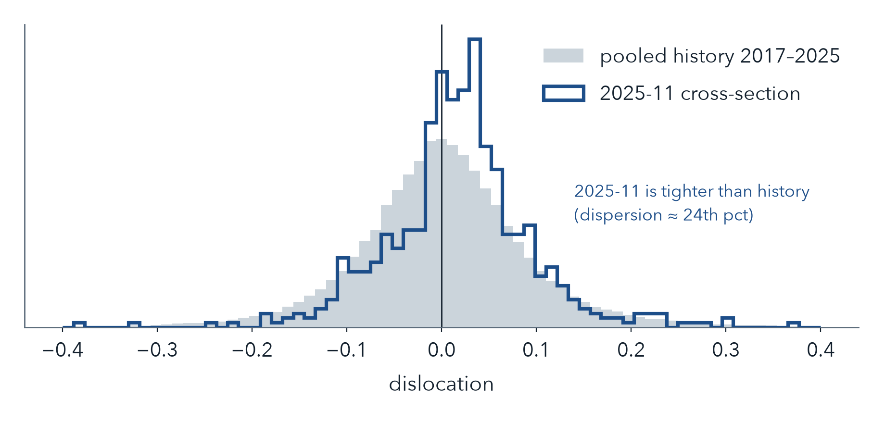

Within firm: multiple bonds → amount-outstanding-weighted firm credit return.
Across firms: equal-weight issuers in each leg — so large debt issuers don't dominate.
Duration-matched Treasury-adjusted (credit-excess) return — to approximate a credit-convergence trade, not a rates bet. Approximately, not perfectly, rate-neutral.

Bonds: wrdsapps_bondret (monthly, TRACE-based, ret_eom).
Equity: CRSP msf_v2 (delisting-adjusted total return).
Link: official bondcrsp_link (PIT, 9-char cusip) — no ticker matching.
Factors: Fama–French monthly.
Current-priced, non-convertible debentures & MTNs; valid return & amount outstanding. Firm key = permco; multi-class equity combined by prior-month cap (no look-ahead).
| Item | Value |
|---|---|
| Panel firm-months | 98,373 |
| Unique firms | 1,244 |
| Panel window | 2015-01 → 2025-11 |
| Signal / backtest window | 2017-01 → 2025-11 |
| Signal months | 107 |
| Bond→equity link rate | ~84% |

eqi,s = αt + βt·bdi,s + ε, over all s ≤ t−1
Pooled OLS, ≥24-month minimum history, single common β, no firm/month FE. α̂t, β̂t then score month t out-of-sample.
Monthly cross-sectional corr: mean 0.29, 96.9% of months positive. Pooled β = 1.26 (t ≈ 147). Expanding βₜ ∈ [1.10, 1.33], all positive.
| Spec | coef | t | +1SD |
|---|---|---|---|
| eqt+1 ~ disloc (primary) | −0.027 | −1.44 | −30 bp |
| bondt+1 ~ disloc (reverse) | +0.030 | +2.84 | +33 bp |
The original equity-convergence test (γ) is insignificant; the reverse diagnostic is significant. Dislocation pins the bond loading at −β̂ — related to, but not identical with, the unrestricted decomposition.
| Regression | term | coef | t |
|---|---|---|---|
| eqt+1 ~ eqt+bdt | bdt | −0.019 | −0.12 |
| eqt+1 ~ eqt+bdt | eqt | −0.028 | −1.41 |
| bdt+1 ~ bdt+eqt | eqt | +0.030 | +2.87 |
| bdt+1 ~ bdt+eqt | bdt | −0.048 | −0.99 |
Own-return autocorrelations are weak/insignificant — the equity→bond result is not a bond mean-reversion artifact.
| Test | ALL | IG | HY | Note |
|---|---|---|---|---|
| Baseline bdt+1 ~ bdt+eqt | 0.030 (2.87) | 0.011 (3.0) | 0.036 (2.8) | +1SD ≈ 10 bp IG / 62 bp HY |
| + duration × Δy10t+1 | 0.031 (2.97) | — | — | ex-post rate control |
| Credit-excess (duration-matched Tsy) | 0.030 (2.96) | — | — | not a Treasury artifact |
| Fresh month-end trade ≤ 5 days | 0.029 (2.70) | 0.011 (2.7) | 0.035 (2.7) | keeps ~97–98% of sample |
| Fresh month-end trade ≤ 1 day | 0.031 (2.40) | 0.010 (2.2) | 0.039 (2.5) | strict; ≤1d drops weekend-EOM months |
| Sleeve | Ann | Vol | Sharpe | NW t | maxDD |
|---|---|---|---|---|---|
| ALL | 5.1% | 4.1% | 1.24 | 2.80 | −2.5% |
| HY | 10.1% | 9.1% | 1.10 | 2.79 | −8.9% |
| IG | 2.2% | 1.9% | 1.12 | 2.47 | −1.1% |
Deciles (EW, credit-excess): ALL 7.2% / Sharpe 1.09; HY 11.9% / Sharpe 0.96. AO-across-firms weighting damps ALL to ~3.2% (large issuers dilute) → EW is primary. Turnover ≈ 157–175% / rebalance. Duration gap Q5−Q1 ≈ 0.05–0.09 yr.
| Cost (bp) | ALL net ann | HY net ann |
|---|---|---|
| 0 (gross) | 5.1% | 10.1% |
| 10 | 1.3% | 6.3% |
| 25 | −4.3% | 0.6% |
| 50 | −13.8% | −8.9% |
These bp levels are illustrative assumptions, not measured transaction costs. t_spread is not used as a cost proxy (its WRDS meaning is unverified). A meaningful share of cumulative HY P&L is the 2020 dislocation/recovery regime.

619 firms (515 IG / 104 HY). Cross-sectional dispersion std ≈ 24th pct, IQR ≈ 11th pct of history → not a market-wide dislocation.
| Name | Dir. | Verdict |
|---|---|---|
| VFC (HY) | long | clean — asset sale → deleverage |
| GT (HY) | long | backup — $2.2B GAAP loss, prospective deleverage |
| ORCL (IG) | short | reject — debt-funded capex + S&P→BBB− |
| HPP (HY) | short | reject — dilutive raise (inverted) |